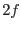
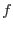
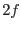
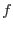

function calcChi2HalfDegFree(numLikelihoods) result(f)
integer(int16), intent(in) :: numLikelihoods
real(single) :: f
end function calcChi2HalfDegFree
A sum over likelihoods seems to have a probability distribution similar to that of a  distribution with  degrees of freedom. The factor  is approximately equal to the number of likelihoods in the sum but not quite. However for the time being (until more accurate information is available, that is) it is assumed that the equality holds exactly.
distribution with  degrees of freedom. The factor  is approximately equal to the number of likelihoods in the sum but not quite. However for the time being (until more accurate information is available, that is) it is assumed that the equality holds exactly.